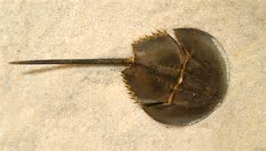

Il limulo
Limulus polyphemus (precedentemente classificato come Limulus cyclops, Xiphosura americana, Polyphemus occidentalis, comunemente detto limulo), è un artropode chelicerato, unico rappresentante del genere Limulus.
Nonostante il suo nome comune in inglese (Atlantic horseshoe crab, cioè "granchio atlantico a ferro di cavallo"), derivante dall'aspetto corazzato e dalla forma particolare del corpo, è più strettamente imparentato con ragni, zecche e scorpioni che con i veri e propri granchi. I limuli si nutrono di molluschi, vermi anellidi ed altri organismi bentonici dei fondali marini.
Il corpo dei limuli si suddivide in tre parti: la porzione della testa (prosoma o cefalotorace), dalla forma caratteristica a ferro di cavallo, contenente gli occhi, il cervello, il cuore, la bocca, i cheliceri e le zampe locomotrici, la porzione centrale (opistosoma o addome) presentante delle spine laterali, che racchiude le cinque paia di branchie a libro e l'opercolo genitale, e la porzione del telson, ovvero la lunga coda rigida. Il colore del carapace va dal grigio verdastro al marrone scuro, e le dimensioni dell'adulto possono arrivare sino a 60 cm.
Il limulo è studiato per il suo peculiare sistema immunitario, infatti nonostante sia piuttosto semplice e primitivo, è in grado di riconoscere efficacemente i lipopolisaccaridi presenti sulla parete dei batteri Gram negativi ed eliminare questi ultimi racchiudendoli in un coagulo. Questa capacità ha portato allo sviluppo del test in vitro LAL (saggio del lisato di amebociti di limulus) o più semplicemente limulus test, usato comunemente per l'individuazione di endotossine batteriche nelle materie prime industriali e nell'acqua, così come in farmacologia e per l'individuazione di alcune malattie batteriche. Il sangue, materia prima del test, viene estratto dai limuli senza provocarne la morte, rigettando in mare gli esemplari al termine del salasso. Dal sangue si ottiene poi un lisato di amebociti (uniche cellule in circolo nel Limulus) che contiene gli enzimi che permettono la gelificazione in presenza dell'endotossina batterica (LPS). Il sangue dei limuli è quasi incolore, ma a contatto con l'aria assume una colorazione azzurra dovuta all'ossidazione dell'emocianina, un pigmento respiratorio contenente rame, che ha le stesse funzioni di trasporto di ossigeno dell'emoglobina. Diversi peptidi isolati da emociti di limulo si sono dimostrati, in test in vitro, in grado di inibire la proliferazione del virus dell'HIV.